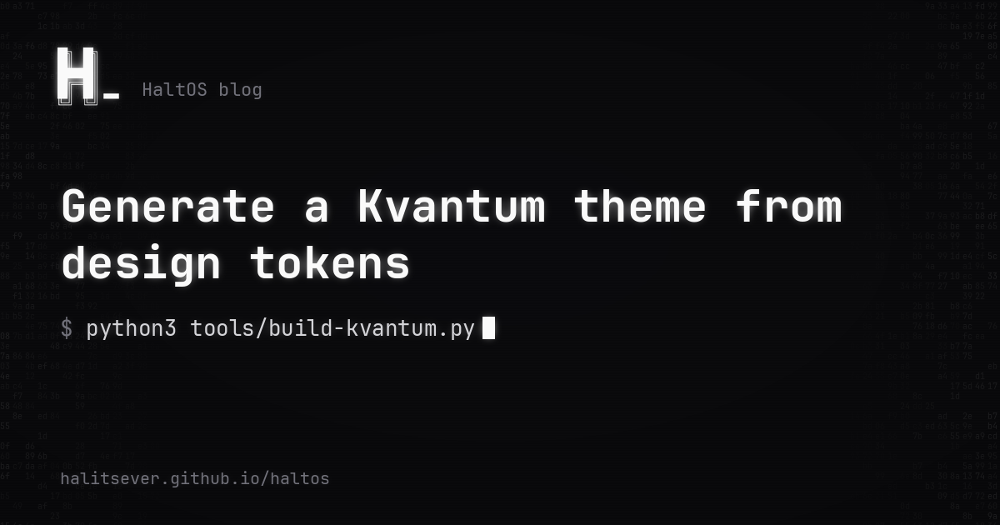

Generate a Kvantum theme from design tokens

Kvantum styles every Qt and KDE widget from an SVG file and a config file. A complete theme needs over a thousand SVG elements. HaltOS generates all of them from about a dozen colours taken from shadcn's zinc palette.
How Kvantum draws a widget
For each widget type, the .kvconfig names an element, say button. Kvantum then looks up nine pieces per state in the SVG: button-normal-topleft, button-normal-top, and so on around the edges, plus button-normal for the middle. It stretches the edges and keeps the corners, so one small drawing fits a button of any size. States are normal, focused (hover), pressed, toggled and disabled.
Tokens instead of drawings
Instead of drawing those pieces, a script computes them. Each element gets a fill and a border colour per state, picked from tokens:
button: normal (bg, border) focused (accent, border)
pressed (strong, strong) toggled (primary, primary)
lineedit: normal (none, border) focused (none, ring)The script turns each pair into rounded corner paths and edge rectangles at the right coordinates. Change one token and every widget follows.
Gotchas worth knowing
- The keyboard focus frame uses stateless ids:
focus-top, notfocus-normal-top. Get it wrong and Kvantum falls back to a dashed rectangle. - Dials are stateless too:
dial,dial-handleanddial-notches. - Missing elements fall back to Kvantum's built-in default theme, which is light. One forgotten element, such as
button-default-indicator, shows up as a stray triangle. - Avoid
rgba()in fills. Usefill-opacity, which Qt's SVG renderer always understands.
The same trick for Plasma
Plasma themes can be partial. HaltOS ships only a panel background, opaque and translucent, and everything else falls back to Breeze. The generator draws that panel from the same tokens, so the top bar matches the widgets.
The generators are small Python scripts in the HaltOS repository, and CI checks that the committed theme matches what they produce.
All posts Next: Keep your dotfiles in git without leaking private files